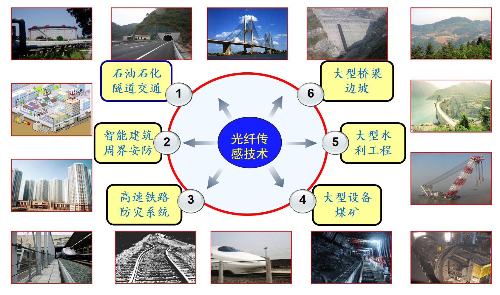
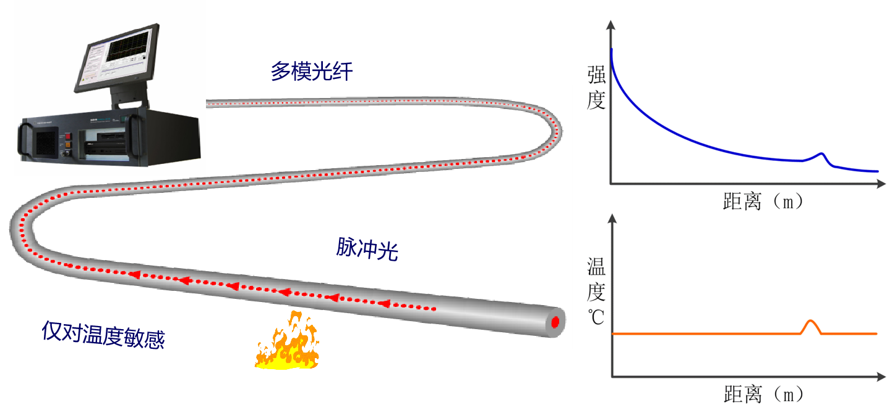
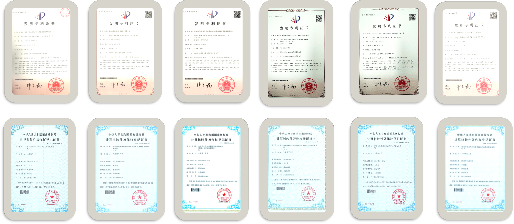
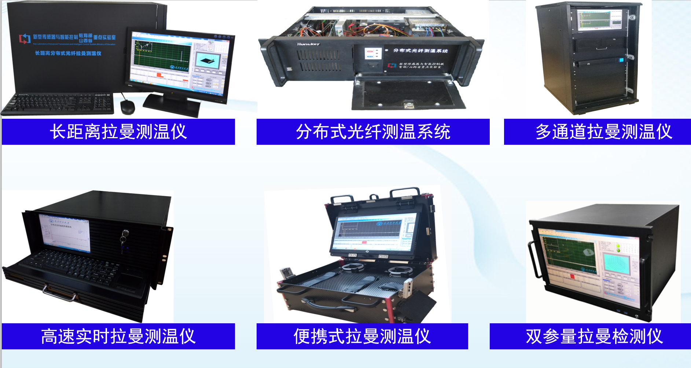
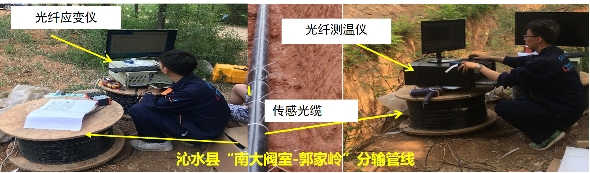
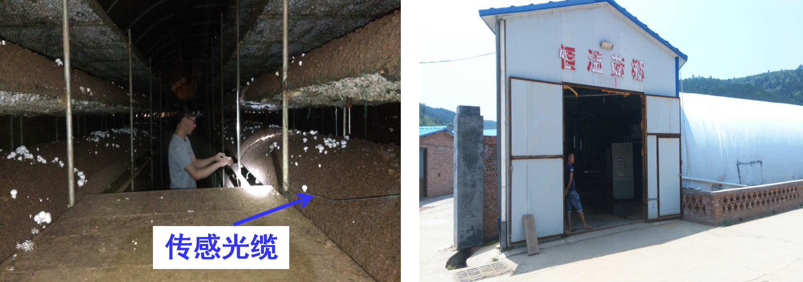
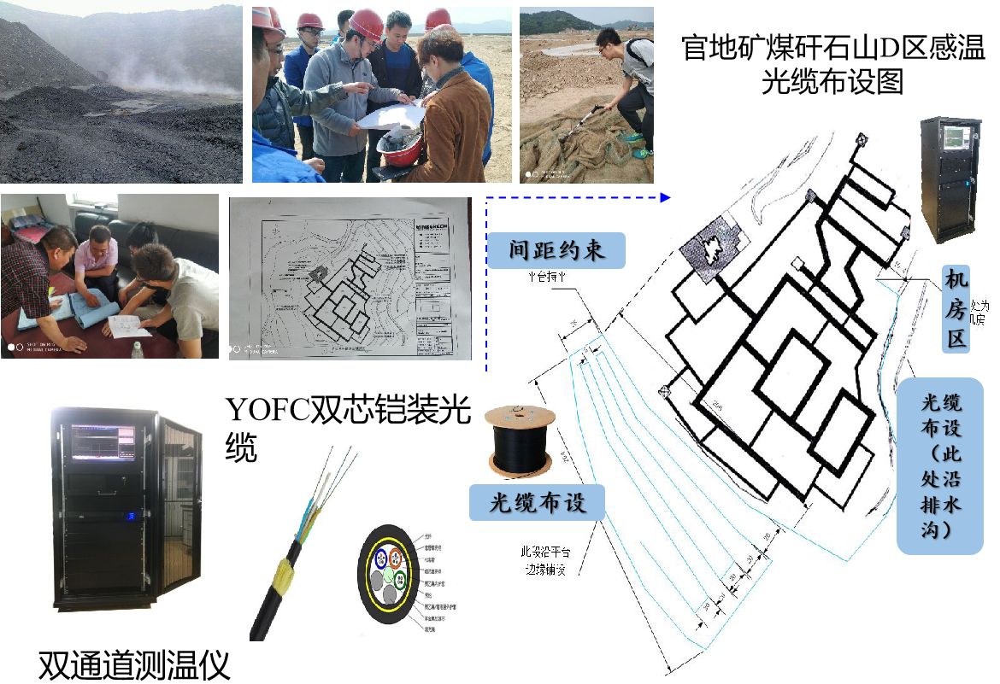

应用场景
随着基础设施结构越来越复杂，传统的点式传感技术已难以满足复杂基础设施空间连续，长距离，长期安全监测要求。 分布式光纤拉曼温度传感技术由于其具有长距离分布式传感、抗腐蚀、抗电磁干扰、易于工程铺设等优点， 目前已广泛应用于交通隧道火灾监测，天然气输气管线监测、智能大坝等温度安全监测领域中。

传感机理

分布式光纤拉曼温度传感技术是基于光纤拉曼散射效应，以实现空间温度场实时测量的传感技术，可以实时获得传感光纤沿线的温度场信息。
部分授权发明专利与登记软件著

上位机系统开发

基于LabVIEW和 .NET 环境开发的传感器软件系统
仪器研制

工程案例
|  |  |  |
新型光纤传感仪应用于天然气输气管道安全监测 |
左权县恒温菇棚温度检测 |
官地矿煤矸石山温度场监测 |